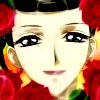

INFO
» basics
» Life
» Love
» compare
» family
» friends
» voice
» quotes
|
MEDIA
» anime
» manga
» screens
» wall
» music
» lyrics
» fanart
|
SITE
» updates
» links out
» link ODT
» credits
» contact
|

|
|

Information -- » Kinship
BIOLOGICAL MOTHER
Himeno's biological mother is not shown very much in the series. However, she is portrayed to be a gentle, kind mother that little Himeno adored. They often do things together, such as planting a new seed for a flower. Himeno's mother would gently tell Himeno the correct way to take care of a plant. Little Himeno would look up with awe and admiration. ^-^ Unfortunately, Himeno's biological mother died when Himeno was quite young, leaving Himeno with her father.
NATSUE
Natsue is Himeno's stepmother, who's very proper and ladylike. Although she's not evil or anything like that, she doesn't care for Himeno the way a mother should. Natsue spends most of her time with Himeno's father, in a lovey-dovey sort of way. Natsue seems to like her own daughters more than Himeno, most likely due to Himeno's "improper" and unladylike ways.
KAORU AWAYUKI
Kaoru is Himeno's biological father, the one who remarried Natsue and as a result, had the entire town changed to his last name. <.< Kaoru is also very lovey-dovey with Natsue, always wooing over Natsue and not paying as much attention to Himeno as he needs to. He's not a bad father, he's quite funny actually. He loves Himeno a lot and would do anything for her. Not much is shown about his relationship with his stepdaughters, but as seen towards the end of the series, he loves them just as much as he loves Himeno.
MAWATA
Mawata is one of Himeno's two stepsisters, a girl with quite a depression problem. In the beginning of the series, she's seen mostly in a depressed state, always by herself and going about her own business in a quiet, snobby sort of manner. She is respected by everyone in town, being one of the richest widow's daughter. She falls in love with Sasame after repeatedly tuning in to his afternoon radio show. By her letters, her inner feelings are shown to be extremely depressing, as she feels that no one loves her and notices her feelings.
MAYUNE
Mayune is Himeno's other stepsister, the scheming and devious one who's always trying to humiliate Himeno someway or another. However, most of her attempts never succeed, and they mostly backfire on herself. She has a habit of literally *dragging* handsome men to be her servant, awaiting her while she takes a shower. *cough* She never succeeds in making them wait either, she would always come out of the shower to find someone else in waiting for her instead. xD
MIKAGE
Mikage is the housemaid that's most prominently shown in the series, and for a good reason too. (However, one can't state the reason without giving out spoilers. ^_~) She seems to be the one who cares the most about Himeno, always waiting on her and being thoughtful to her. We don't see Mikage serving the other members of the family nearly as much as she does Himeno. If you look closely, she has an uncanny resemblance to another Pretear character.
^ top
|